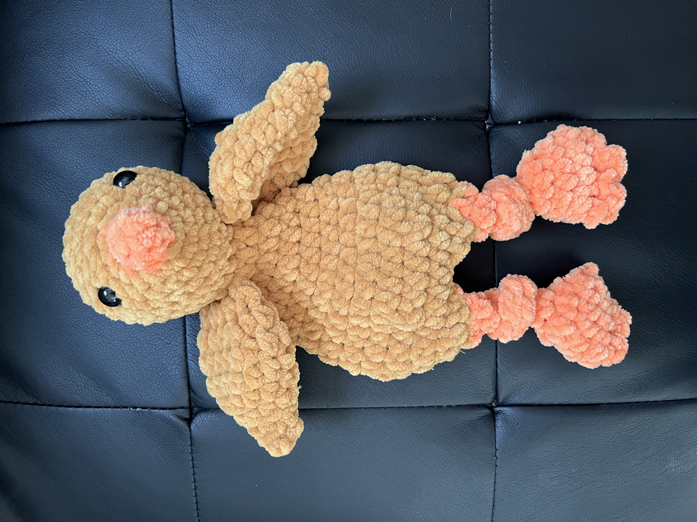
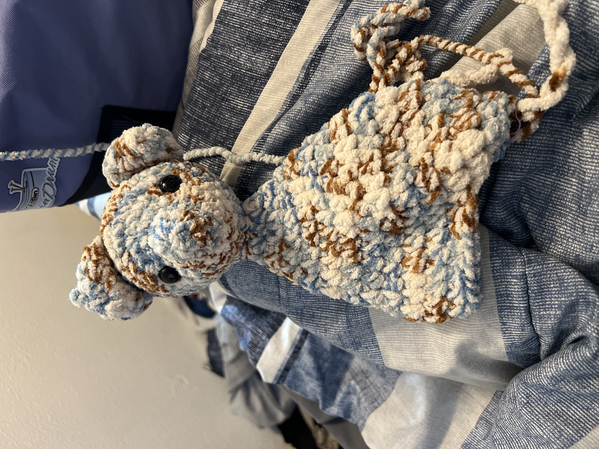

Crocheting is a huge passion of mine. Some things I like to make inclue stuffed animals, like this little chick. (pictured to the right)
 A master of the art is definitely not how I would describe myself, although I do have many years of experience. It takes a lot of dedication to be a true master of this lost art. I'm just barely starting to dabble in writing my own patterns. My first true pattern is these "bear ears" (pictured to the left)
A master of the art is definitely not how I would describe myself, although I do have many years of experience. It takes a lot of dedication to be a true master of this lost art. I'm just barely starting to dabble in writing my own patterns. My first true pattern is these "bear ears" (pictured to the left)

Not only do I have a passion for crocheting but I also have a passion for bears. It wasn't until recently (this year), that I realised I have never made a bear related item for myself, so I made this cute little bear stuffie and he's so precious.